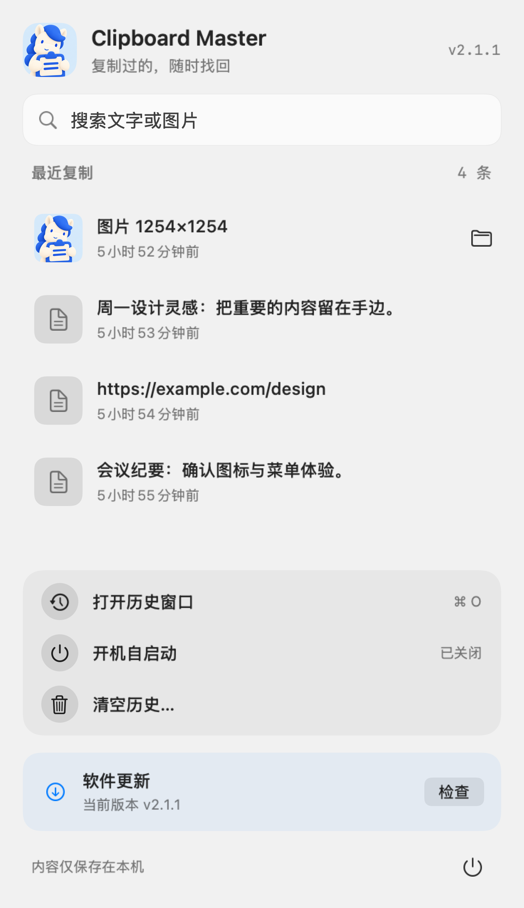

<!doctype html><meta charset="utf-8"><style>
*{box-sizing:border-box}body{margin:0;background:#c7d4e4;font-family:-apple-system,BlinkMacSystemFont,'PingFang SC',sans-serif;color:#102a50}section{position:relative;width:1920px;height:1080px;overflow:hidden;background:radial-gradient(ellipse at 25% 25%,#fff,#edf5fc 65%);margin-bottom:32px}h1{font-size:96px;letter-spacing:-3px;line-height:1.05;margin:0;font-weight:750}h2{font-size:82px;margin:0;line-height:1.25}p{font-size:38px;line-height:1.5;color:#526780}.pony{position:absolute;width:600px;height:600px;left:160px;top:225px;border-radius:80px;box-shadow:0 40px 90px #173c681f}.copy{position:absolute;left:890px;top:325px;width:920px}.tag{font-size:32px;color:#2463d4;letter-spacing:3px;margin-bottom:28px}.menu{position:absolute;right:220px;top:80px;height:920px;border-radius:32px;box-shadow:0 36px 80px #1e3e632a}.left{position:absolute;left:125px;top:320px;width:840px}.smallpony{position:absolute;width:290px;left:815px;top:105px;border-radius:52px}.out{text-align:center;position:absolute;top:445px;width:100%}.url{font-size:36px;color:#2463d4}.mark{height:5px;width:160px;background:#2463d4;margin:28px auto;border-radius:6px}
</style>
<section id="hero"><div class="copy"><div class="tag">你的剪贴板小管家</div><h1>Clipboard<br>Master</h1><p>复制过的，随时找回。</p></div></section>
<section id="feature"><div class="left"><div class="tag">文字 · 链接 · 图片</div><h2>文字、图片，<br>一起收好。</h2><p>最近 200 条，按需找回。</p></div></section>
<section id="outro"><div class="out"><h1 style="font-size:100px">Clipboard Master</h1><div class="mark"></div><h2 style="font-size:62px">让每一次复制，都有下文。</h2><p class="url">github.com/crawfordxx/clipboard-master</p></div></section>
